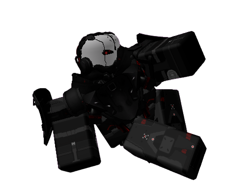

0xA4-3C — NEURAL LINK ACTIVE — HK_VT_FULL_BORG
ADAM SMASHER

█ RESTRICTED FILE █
ADAM SMASHER
Actor: YOUR ACTOR
Team: TEAM NAME
Status: SAFE
HE IS ALWAYS WATCHING
Short Bio
Adam Smasher is one of the scariest contestants in ASU. He rarely talks, shows almost no emotion, and solves most of his problems with violence. Most contestants try to avoid him whenever possible.
Quote
"You look like a cut of fuckable meat."
How They Arrived
Before ASU
Adam was carrying out another mission in Night City when everything around him suddenly stopped.
Arrival
Unlike the other contestants, Adam was taken before the show began. The Host offered him a deal. If Adam worked for him and watched the other contestants, the Host would grant him any wish he wanted. Adam accepted.
Current Story
Adam has mostly kept to himself since arriving in ASU. While everyone else focuses on friendships and alliances, Adam watches from the sidelines. Very few people trust him, and even fewer know what he is really planning.
Relationships
Allies
- The Host — Adam secretly works for him.
Rivals
- Joker — Joker believes Adam is hiding something.
- Gyro — Gyro has started to become suspicious of Adam.
Enemies
- The Exit Team — If they find out the truth, Adam becomes a major threat.
Lore
WARNING: FILE CORRUPTION DETECTED.
Adam Smasher was the first contestant taken by the Host. He is one of the only contestants who knows more about the Host than he should. Most files about Adam are either missing, locked, or corrupted.